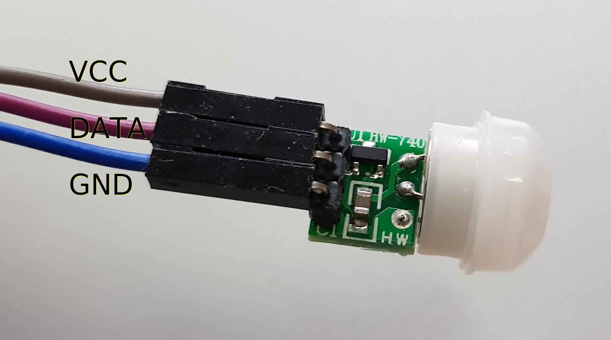

IoT multisensor¶
Parts list¶
Through the control network, 24V is available throughout the house.
To operate the ESP's I used a DC-DC switching regulator MP1584EN.
Install Arduino IDE¶
The Arduino IDE from my debian package repository is very old.
To get a newer version of the Arduino IDE got to the Official Website and download your package.
cd ./Downloads
sudo tar xvJf arduino-1.8.12-linux64.tar.xz -C /opt
ls -lh /opt/
sudo -E /opt/arduino-1.8.12/install.sh
Now, you have to add the Debian 10 login user to the dialout, tty, uucp and plugdev group. https://linuxhint.com/install_arduino_ide_debian_10/
ESP8266¶
LIBs¶
To enable the esp8266 libs at Arduino IDE
- Go to File > Preferences -> Additional Board Manager URLs: http://arduino.esp8266.com/stable/package_esp8266com_index.json
- Tools > Board -> Boards Manager -> Search for ESP8266 and install
Dependency libs:
-
git clone https://github.com/knolleary/pubsubclient.git
-
git clone https://github.com/adafruit/DHT-sensor-library.git
-
copy to ~/Arduino/libraries
MQTT Interface
-
subscription topics (start with prefix(v01/esp/) + esp_name + topic_type)
-
e.g. v01/esp/nodeMCUIBS/config/get_status
| topic | meaning |
|---|---|
| /config/echo | just send an reply |
| /config/get_status[value: ""; status; prozess; heap] | |
| /config/set_name [new name] | change name of esp (with prefix for topics) |
| /config/send_intervall_sensor [new time in ms] | e.g. "10000" for 10s |
| /config/send_intervall_status | watchdog with status information |
| /config/reset [dht, setup, vars] |
GPIO¶
| - | - | - | - |
|---|---|---|---|
| VCC | RST | CH_PD | TXD |
| RXD | GPIO0 | GPIO2 | GND |
NodeMCU - multisensor¶
Features¶
-
read temperatur / humility and publish cyclic
-
read light lux and publish cyclic
-
detect motion and publish at detection (on rising edge)
Pinout¶
GPIO sensoric¶
| pin | DHT22 | AM312 | KY-018 |
|---|---|---|---|
| 1 | VCC | VCC | GND |
| 2 | DATA=D7 | OUT=D2/D5 | VCC |
| 3 | nc | GND | DATA=A0 |
| 4 | GND |

NODE mcu platine soldered¶
| GPIO | platine-color | device |
|---|---|---|
| D2 | orange | pir 1 -> pin_2 (stairs) |
| D5 | yellow | pir 2 -> pin_2 (corridor) |
| 3V | red | pir1/2 -> pin_1 |
| 3V | violett | pir1/2 -> pin_1 |
| gnd | blue | pir1/2 -> pin_3 |
| gnd | grey | pir1/2 -> pin_3 |
| A0 | green | S |
| g | yellow | middle |
| VV | orange | - |
| D7 | grey | DHT_2 |
| 3V | black | DHT_1 |
| g | white | DHT_4 |
NODE mcu general¶
| GPIO | device | GPIO | device |
|---|---|---|---|
| A0 | KY-S [black] | D0 | |
| G | KY-middle [brown] | D1 | |
| VV | KY - [red] | D2 | pir middle [orange] |
| S3 | D3 | ||
| S2 | D4 | ||
| S1 | 3V | ||
| SC | G | ||
| S0 | D5 | pir middle [yellow] | |
| SK | D6 | ||
| G | pir 3 [red/grey] | D7 | DHT22 2 (signal) [orange] |
| 3V | pir 1 [blue/green] | D8 | |
| EN | RX | ||
| RST | TX | ||
| G | G | DHT22 4 [red] | |
| VIN | 3V | DHT22 1 [brown] | |
| - | === | === | - |
3D Case¶
This is the 3D model of the case

Natural environment¶


Here you can see the sensor in the wild and the inside of it.